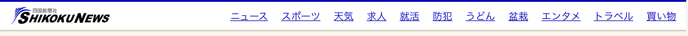

文章を構成するために必要最低限の HTML 要素の使い方。小さなバリエーション以外は、クラス名を記述することなく再現することができます。
うどん遍路では複雑な情報構成を持たせていないことから、ヘッダーのスタイリングは 2 種類だけ用意されています。ヘッダーと他の要素のバランスは CSS で自動的に調整します。
<h1>うどん遍路</h1>
<h2>一体車屋と教師とはどっちがえらいだろう</h2>段落タグ <p> を付けて記述することで、バランスの整った文章を表示することができます。太字 <strong> を使って強調することもできます。
どこで生れたかとんと見当けんとうがつかぬ。何でも薄暗いじめじめした所でニャーニャー泣いていた事だけは記憶している。吾輩はここで始めて人間というものを見た。しかもあとで聞くとそれは書生という人間中で一番獰悪どうあくな種族であったそうだ。この書生というのは時々我々を捕つかまえて煮にて食うという話である。
吾輩の主人は滅多めったに吾輩と顔を合せる事がない。職業は教師だそうだ。学校から帰ると終日書斎に這入ったぎりほとんど出て来る事がない。家のものは大変な勉強家だと思っている。当人も勉強家であるかのごとく見せている。しかし実際はうちのものがいうような勤勉家ではない。注釈文
<p>どこで生れたかとんと見当けんとうがつかぬ。何でも薄暗いじめじめした所でニャーニャー...</p>
<span class="notes">注釈文</span>情報をひとつのグループにまとめて伝えたいときにリストが便利です。「・」でまとめたリスト <ul> だけでなく、番号を使って順番にまとめる <ol> も使えます。
リストの先頭に記しを付けたくない場合は class="no-list-style を付けます。
<ul>
<li>かけうどん</li>
...
</ul>
<ol>
<li>かけうどん</li>
...
</ol>
<ul class="no-list-style">
<li>かけうどん</li>
...
</ul>情報を表組みにして表現したい場合に使用します。表の見た目は CSS で自動的に調整されます。例えば偶数行で背景色が変わる演出も CSS 側で実装されているので、コードでひとつひとつ設定する必要はありません。
項目名がある場合は <td> ではなく、 <th> を推奨します。
| １玉の重さ | 260グラム |
|---|---|
| 麺の太さ | ４ミリ（夏は細目） |
| ぬるさ加減 | 可 |
| しょうゆうどん | 340円 |
<table class="data-table">
<tr>
<th>１玉の重さ<th>
<td>260グラム<td>
</tr>
<tr>
<th>しょうゆうどん<th>
<!-- 価格は右寄せ -->
<td class="is_price">340円<td>
</tr>
</table>うどん遍路では、一貫性のある見た目、うどんをテーマにしたサイトであることを示すために、カラーパレットが指定されています。 SASS ファイルには変数が設定されており、HEX 値などを手動で書くことなく、同じ色が何度も使えるようになっています。
| $udon_darkest #5c5c51 |
$udon_darker #b0aca2 |
$udon_dark #e2ded0 |
$udon #FCF7E8 |
$udon_light #fcf9ee |
$udon_lightest #fdfbf5 |
| $shikou_darkest #000037 |
$shikou_darker #00006f |
$shikou_dark #000094 |
$shikou #0000BA |
$shikou_light #6666d5 |
$shikoku_lighter #b2b2ea |
$shikoku_lightest #e5e5f8 |
| $olive_darkest #22260f |
$olive_darker #454c1f |
$olive_dark #5c6629 |
$olive #748034 |
$olive_light #8faf63 |
$olive_lighter #b9cd9e |
$olive_lightest #e3ebd8 |
| $keppel_darkest #153d40 |
$keppel_darker #205c60 |
$keppel_dark #2b7b80 |
$keppel #369AA1 |
$keppel_light #72b8bd |
$keppel_lighter #aed6d9 |
$keppel_lightest #eaf4f5 |
| $hibiscus_darkest #481C1C |
$hibiscus_darker #783030 |
$hibiscus_dark #c04c4c |
$hibiscus #F06060 |
$hibiscus_light #f37f7f |
$hibiscus_lighter #f7afaf |
$hibiscus_lightest #fdefef |
| $birch_dark #151510 |
$birch #353629 |
$birch_light #5d5e53 |
$birch_lighter #aeaea9 |
$birch_lightest #eaeae9 |
レイアウトは 2, 3, 4 カラムに対応しています。いずれもレスポンシブに対応するようになっており、デスクトップで自由にレイアウトを組んでも小さなスクリーンで見た目が調整されます。
<div class="grid grid-half">
<div class="col"> ... </div>
<div class="col"> ... </div>
</div>カラム間 にスペースが必要ない場合は grid-nospace というクラス名を追加します。2, 3, 4 カラムすべてに対応しています。
<div class="grid grid-half grid-nospace">
<div class="col"> ... </div>
<div class="col"> ... </div>
</div><div class="grid grid-thirds">
<div class="col"> ... </div>
<div class="col"> ... </div>
<div class="col"> ... </div>
</div><div class="grid grid-fourth">
<div class="col"> ... </div>
<div class="col"> ... </div>
<div class="col"> ... </div>
<div class="col"> ... </div>
</div>うどん遍路だけでなく、四国新聞 Web サイト内にある別ページでも使える要素。
四国新聞全体で使えるナビゲーション。jQuery のような JavaScript ライブラリを使用せずにレスポンシブメニューを実装しているので、導入がしやすくなっています。

<section class="global-bar">
<h1 id="logo"> ... </h1>
<nav class="global-nav" id="global-nav" role="navigation">
<ul role="navigation">
<li><a href="#">ニュース</a></li>
<li> ... </li>
<li class="responsive-nav"><a href="javascript:void(0);" onclick="globalnav()">☰</a></li>
</ul>
</nav>
</section>初期段階では、著作権の文言しかないシンプルな見た目になっていますが、あとでコンテンツを加えてスタイリングすることも可能です。その場合はテキストの色も含めて独自クラス設けて実装してください。
<footer>
<p> ... </p>
</footer>うどん遍路だけで使われる独自要素がまとまっています。これらは特定の class 名を記述することで見た目を再現することができます。クラス名は独立しており、HTMLの文書構造に依存していません。よって、自由に要素をレイアウトに配置できるだけでなく、別のクラス名を加えることで現存の見た目を拡張いやすくなっています。
人気うどんを表示するために利用します。
<section class="countdown">
<h2 class="side-padding"><svg role="image" class="crown"><use xlink:href="./img/icons.svg#ic_crown" /></svg>人気メニュー</h2>
<ol class="countdown-list">
<li>かけうどん</li>
...
</ol>
</section>うどん店名称のスタイリングに使われます。写真を背景に使うため、コントラス比を担保するために白地に影を付けています。
<h1 class="shop-name">讃岐うどん やなぎ屋 西大浜店</h1>うどん店の種類を示す際に利用します。通常、うどん店名と隣接して表示されるものです。
セルフ<span class="shop-label">セルフ</span>様々な用途に利用可能なディフォルトボタンのデザインです。HTMLの要素に依存することなく実装することができます。
<a class="btn">お店のHP</a>1800px x 1200px の大きめな写真を使います。現在のスマートフォンのスクリーンは、パソコンより高い解像度が多いです。よって、パソコンとスマートフォンで画像を切り替えることをせず、同じ素材をそれぞれ使います。
Compressor.ioのようなサイトはファイルサイズ圧縮に便利なツールです。
<div class="shop-cover">
<div class="shop-header">
<span class="shop-label"">セルフ</span>
<h1 class="shop-name">店舗名</h1>
</div>
<img src="./img/sample.jpg" alt="店舗名のうどんメニュー">
</div>地図は Google Maps API を利用して、静止画像を表示しています。パフォーマンスの向上と、スマートフォンなど小さな画面での誤操作を防ぐために静止画を選んでいます。クリックすると Google Maps へ移動します。
コードに住所を記入するだけで指定位置にピンが入った地図が表示されます。
<a href="Google Maps へのリンク"><img src="https://maps.googleapis.com/maコンテンツが間延びしてしまいがちのテーブル組みのコンテンツはスマホでは開閉式のインターフェイスに切り替わります。項目名が書かれているtoggleボタン要素のすぐあとにコンテンツが入るtoggle-panelを続けて記述してください。
吾輩の主人は滅多めったに吾輩と顔を合せる事がない。職業は教師だそうだ。学校から帰ると終日書斎に這入ったぎりほとんど出て来る事がない。家のものは大変な勉強家だと思っている。当人も勉強家であるかのごとく見せている。しかし実際はうちのものがいうような勤勉家ではない。
<button class="toggle"></button>
<div class="toggle-panel">
...
</div>しこしこうどん 百こ萬
第75番札所 総本山 善通寺
山下うどん
<section class="mykagawa">
<h2 class="mykagawa-header"> <span>一緒に行きたい、おすすめコース</span><span class="course">コース名</span></h2>
<div class="mykagawa-item">
...
</div>
<div class="mykagawa-button"><a href="#">コースへのリンク</a></div>
</section>